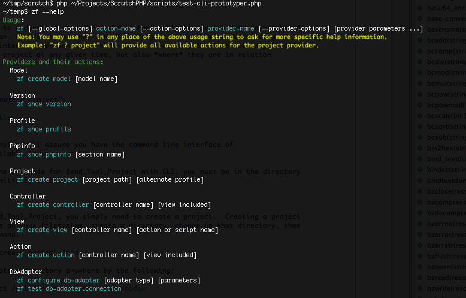

The CLI, or command line tool (internally known as the console tool),
is currently the primary interface for dispatching Zend_Tool
requests. With the CLI tool, developers can issue tooling requests
inside the "command line windows", also commonly known as a "terminal"
window. This environment is predominant in the *nix environment, but
also has a common implementation in windows with the
cmd.exe, console2 and also with the Cygwin project.
To issue tooling requests via the command line client, you first
need to set up the client so that your system can handle the "zf"
command. The command line client, for all intents and purposes, is
the .sh or .bat file that is provided with
your Zend Framework distribution. In trunk, it can be found here:
http://framework.zend.com/svn/framework/standard/trunk/bin/.
As you can see, there are 3 files in the /bin/
directory: a zf.php, zf.sh, and
zf.bat. The zf.sh and the
zf.bat are the operating system specific client
wrappers: zf.sh for the *nix environment, and
zf.bat for the Win32 environment. These client wrappers are
responsible for finding the proper php.exe, finding the
zf.php, and passing on the client request. The
zf.php is the responsible for handling understanding
your environment, constructing the proper include_path, and passing
what is provided on the command line to the proper library component
for dispatching.
Ultimately, you want to ensure two things to make everything work regardless of the operating system you are on:
zf.sh/zf.batis reachable from your system path. This is the ability to call zf from anywhere on your command line, regardless of what your current working directory is.ZendFramework/libraryis in your include_path.
![[注意]](images/note.png) |
注意 |
|---|---|
Note: while the above are the most ideal
requirements, you can simply download Zend Framework and expect it
to work as |
The most common setup in the *nix environment, is to copy the
zf.sh and zf.php into the same directory
as your PHP binary. This can generally be found in one of the
following places:
/usr/bin /usr/local/bin /usr/local/ZendServer/bin/ /Applications/ZendServer/bin/
To find out the location of your PHP binary, you can execute 'which php' on the command line. This will return the location of the PHP binary you will be using to run PHP scripts in this environment.
The next order of business is to ensure that Zend Framework
library is set up correctly inside of the system PHP
include_path. To find out where your
include_path is located, you can execute php -i
and look for the include_path variable, or more succinctly,
execute php -i | grep include_path. Once you have found where
your include_path is located (this will generally be
something like /usr/lib/php, /usr/share/php,
/usr/local/lib/php, or similar), ensure that the contents of the
/library/ directory are put
inside your include_path specified directory.
Once you have done those two things, you should be able to issue a command and get back the proper response like this:

If you do not see this type of output, go back and check your setup to ensure you have all of the necessary pieces in the proper place.
There are a couple of alternative setups you might want to employ depending on your servers configuration, your level of access, or for other reasons.
Alternative Setup involves keeping the Zend
Framework download together as is, and creating a link from a PATH
location to the zf.sh. What this means is you can
place the contents of the ZendFramework download into a location
such as /usr/local/share/ZendFramework, or more locally
like /home/username/lib/ZendFramework, and creating a
symbolic link to the zf.sh.
Assuming you want to put the link inside /usr/local/bin
(this could also work for placing the link inside
/home/username/bin/ for example) you would issue a
command similar to this:
ln -s /usr/local/share/ZendFramework/bin/zf.sh /usr/local/bin/zf # OR (for example) ln -s /home/username/lib/ZendFramework/bin/zf.sh /home/username/bin/zf
This will create a link which you should be able to access globally on the command line.
The most common setup in the Windows Win32 environment, is to copy
the zf.bat and zf.php into the same
directory as your PHP binary. This can generally be found in one of
the following places:
C:\PHP C:\Program Files\ZendServer\bin\ C:\WAMP\PHP\bin
You should be able to run php.exe on the command line.
If you are not able to, first check the documentation that came with
your PHP distribution, or ensure that the path to
php.exe is in your
Windows PATH environment variable.
The next order of business is to ensure that Zend Framework
library is set up correctly inside of the system PHP
include_path. To find out where your
include_path is located, you can type php -i and
look for the include_path variable, or more succinctly
execute php -i | grep include_path if you have Cygwin setup with
grep available. Once you have found where your
include_path is located (this will generally be
something like C:\PHP\pear, C:\PHP\share,
C:\Program%20Files\ZendServer\share or similar), ensure
that the contents of the library/ directory are put inside your
include_path specified directory.
Once you have done those two things, you should be able to issue a command and get back the proper response like this:

If you do not see this type of output, go back and check your setup to ensure you have all of the necessary pieces in the proper place.
There are a couple of alternative setups you might want to employ depending on your server's configuration, your level of access, or for other reasons.
Alternative Setup involves keeping the Zend
Framework download together as is, and altering both your system
PATH as well as the php.ini file.
In your user's environment, make sure to add
C:\Path\To\ZendFramework\bin, so that your
zf.bat file is executable. Also, alter the
php.ini file to ensure that
C:\Path\To\ZendFramework\library is in your
include_path.
If for some reason you do not want Zend Framework library inside
your include_path, there is another option. There are
two special environment variables that zf.php will
utilize to determine the location of your Zend Framework
installation.
The first is ZEND_TOOL_INCLUDE_PATH_PREPEND, which will
prepend the value of this environment variable to the system
(php.ini) include_path before loading the
client.
Alternatively, you might want to use
ZEND_TOOL_INCLUDE_PATH to completely
replace the system include_path
for one that makes sense specifically for the zf
command line tool.
At this point, you should be set up to start initiating some more "interesting" commands. To get going, you can issue the zf --help command to see what is available to you.

Continue on to the Zend_Tool_Project "Create Project"
section to understand how to use the zf script for
project creation.